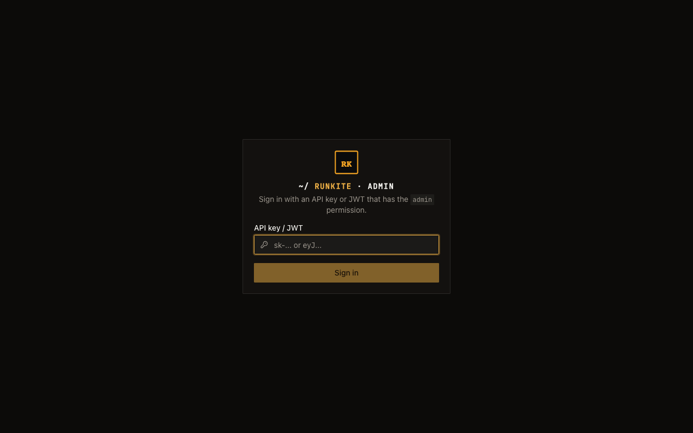

Start
Admin login
Admin is not “any API key.” The dashboard only accepts a credential with the
admin permission (or an auth.admin_keys entry). Dev compose often skips login entirely — that is intentional, and it is why this feels confusing later.
What it is
Open http://<host>:2026/admin/. If auth is off, you land straight in Overview.
If auth is on, you paste an API key or JWT into API key / JWT and sign in.
The browser keeps an httpOnly session cookie — the raw key is not stored in JavaScript.
Why it is here
Every /admin-api/* route sees across tenants. Read/write client keys must not open that surface.
Operators need an explicit admin credential, configured in langgraph.json (or Helm values), not invented by the UI.
When login is skipped
- No primary auth and no
admin_keys— pure local/dev. Admin opens with no prompt (same as an open Agent Protocol API). - Dev compose / try path — typically this mode. “Admin open” on Try means no login, not “login with a magic default key.”
What to put in config
Give the operator key admin (plus read/write if it also calls client APIs):
{
"auth": {
"type": "api_key",
"strict_permissions": true,
"keys": {
"sk-ops-admin": {
"name": "platform-ops",
"permissions": ["read", "write", "admin"],
"tenant_id": "default"
},
"sk-app-client": {
"name": "backend-service",
"permissions": ["read", "write"],
"tenant_id": "default"
}
}
}
}
Or keep client keys read/write-only and add Admin-only break-glass keys:
"auth": {
"type": "api_key",
"keys": { ... },
"admin_keys": {
"sk-break-glass": "oncall"
}
}
admin_keys are accepted only on /admin-api/* and always imply admin.
How to log in
- Deploy with auth enabled (Helm sets
RUNKITE_API_KEYinto a key that includesadmin— see chart README). - Open Admin → you should see the login card: “Sign in with an API key or JWT that has the admin permission.”
- Paste
sk-ops-admin(or your JWT /admin_keyssecret). Submit. - You land on Overview. Session cookie + CSRF protect mutating calls.
In the product
admin

What to expect
- 403 / insufficient permissions — key exists but lacks
admin(classic trap after copying the quickstart read/write sample). - 401 — unknown key, bad JWT, or empty
admin_keyswith no primary auth match. - No user CRUD in Admin — keys live in config / secrets manager, not a users table in the UI.
- Logged in — now what? — see Admin UI guide for a screen-by-screen walkthrough of every page in the dashboard.
Reference: docs/admin.md · docs/auth.md · Credentials map · Production day-0